Generator testów
Aplikacja dla nauczycieli
O systemie
Aplikacja powstała z myślą o nauczycielach, którzy chcą szybko tworzyć testy dla swoich uczniów, ale wolą sami układać zadania. System umożliwia tworzenie zadań z podziałem na własne kategorie, tworząc bazę pytań, z której można losowo generowac testy. Nauczyciel wybiera liczbę grup, a następnie dodaje pytania do testu wybierając kategorię i klikając "Dodaj". Wtedy system losowo wybiera pytania z danej kategorii (liczba pytań równa liczbie grup) i dodaje po jednym do każdej grupy. W przypadku wybrania 1 grupy nauczyciel ma możliwość ręcznego dodania pytania do testu poprzez wpisanie jego ID. Aplikacja wspiera dodawanie ilustracji do każdego pytania (choć nie jest to obowiązkowe), oraz umożliwia wpisywanie zaawansowanych formuł matematycznych dzięki wykorzystaniu formatu LateX. Po wygenerowaniu test wyświetla się w formie pliku PDF.
Technologie
Projekt wykorzystuje następujące technologie:
- JavaScript
- Express
- Szablony widoków EJS
- MongoDB
Galeria
Zobacz jak prezentuje się interfejs aplikacji.
 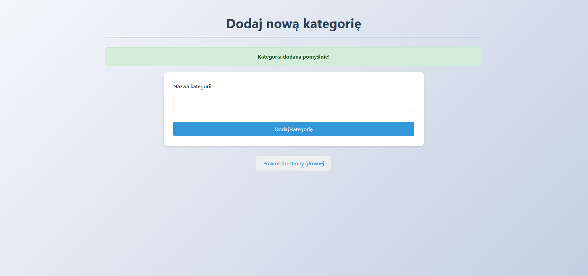
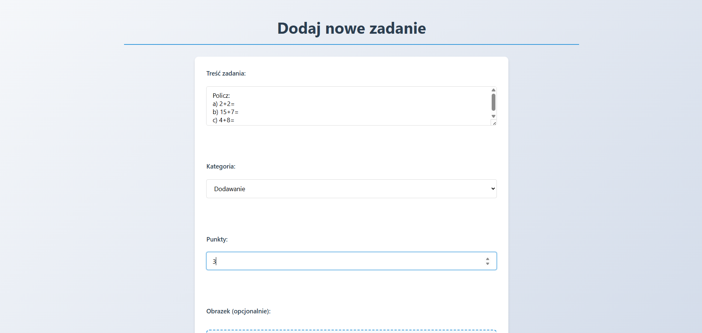
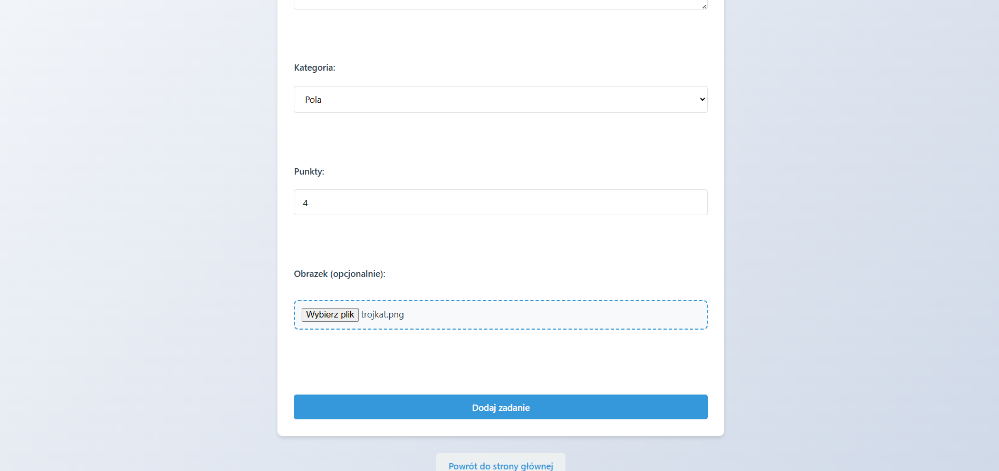
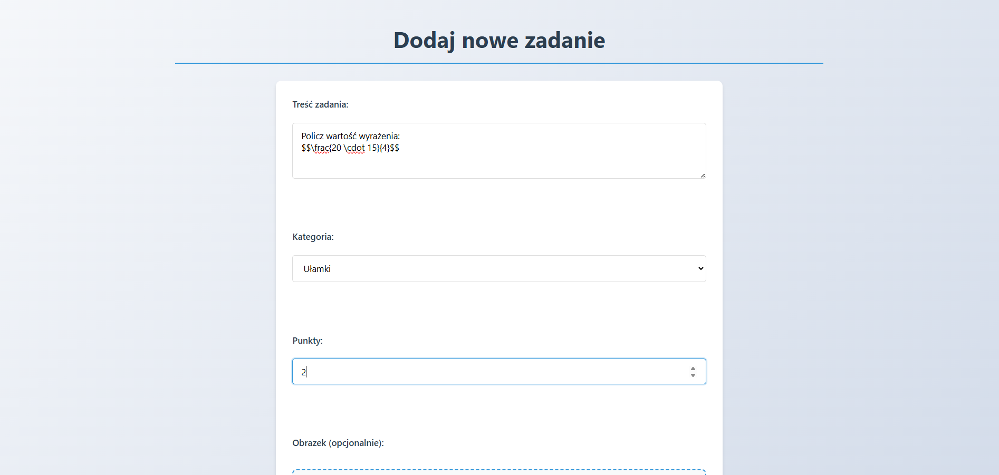
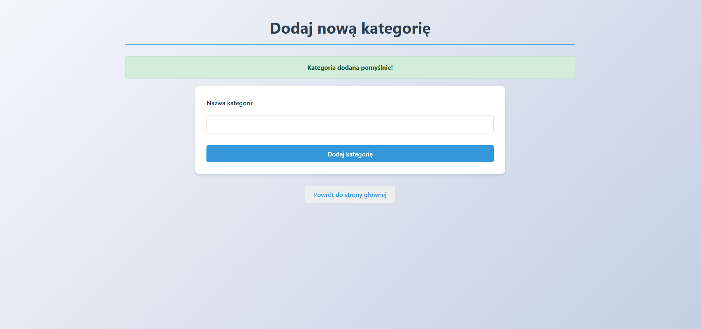
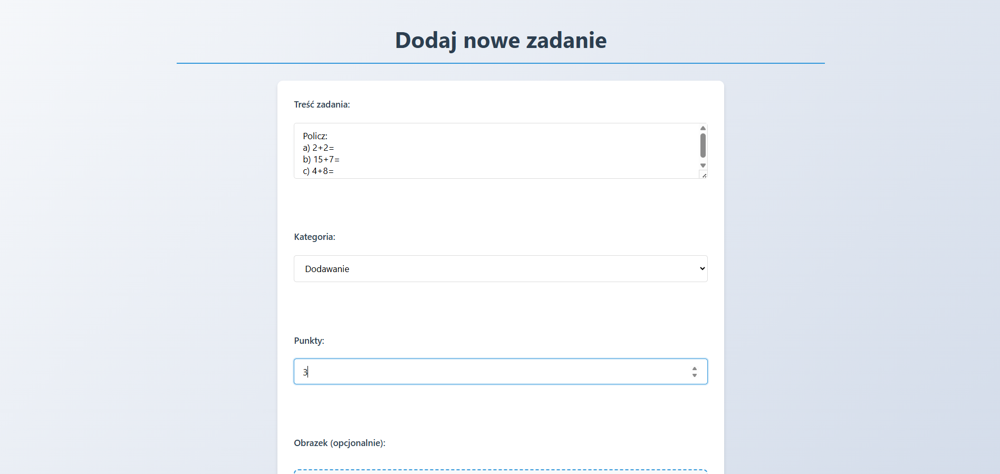
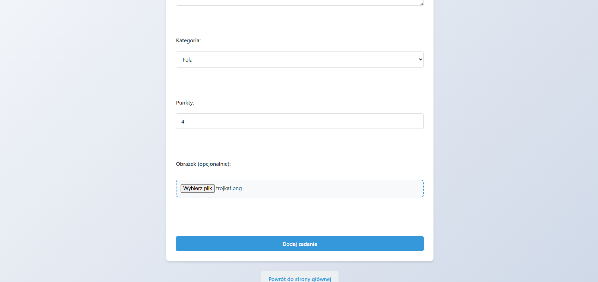
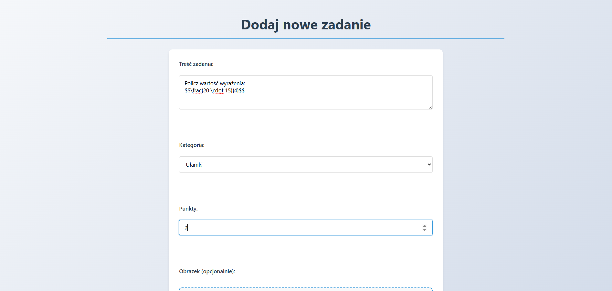
 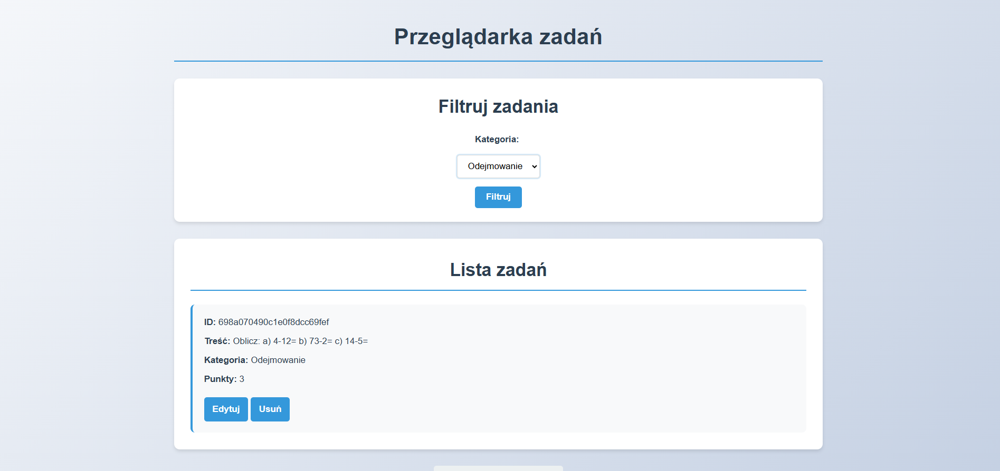
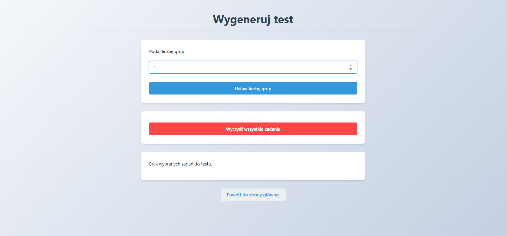
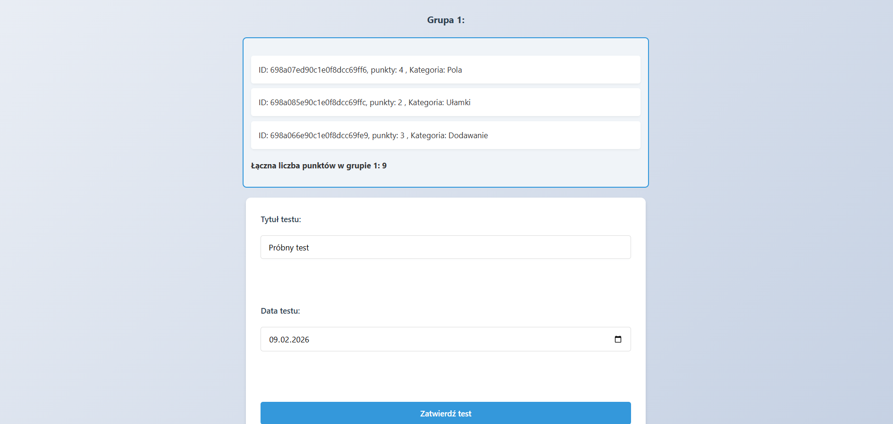
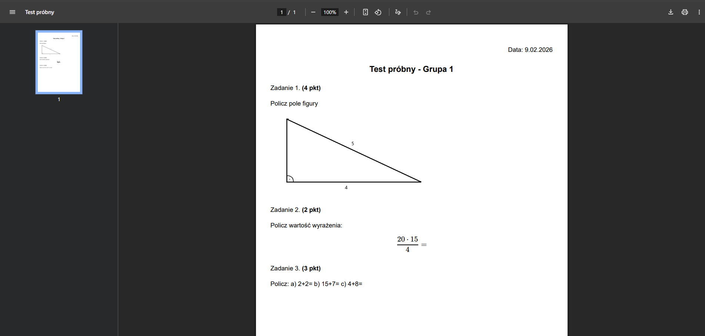
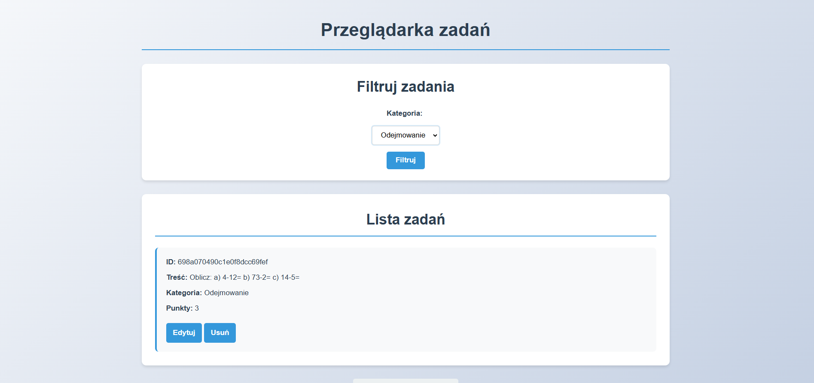
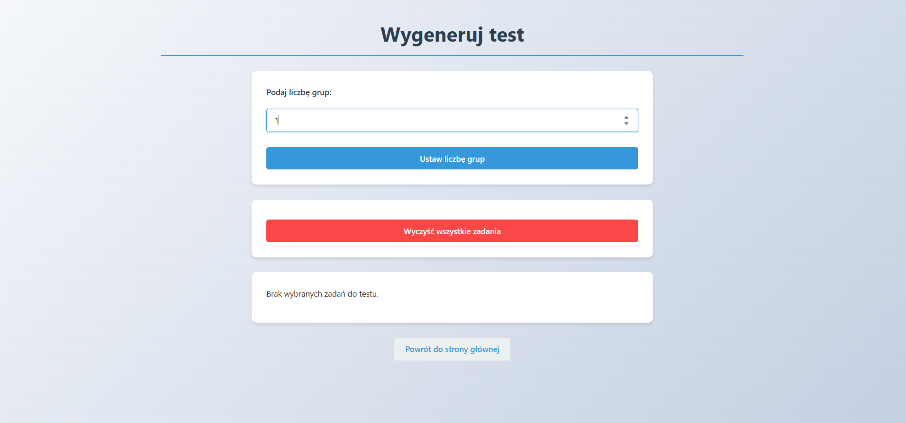
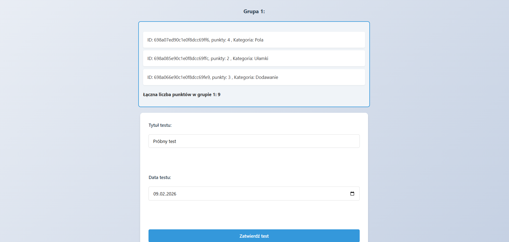
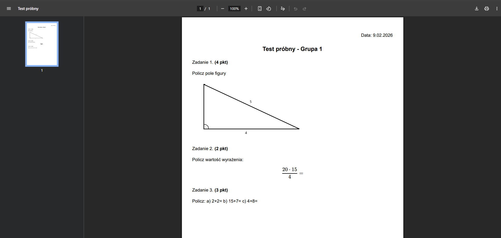